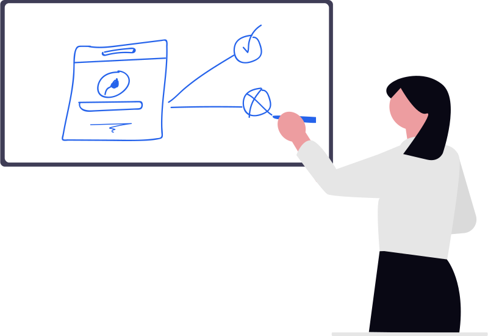
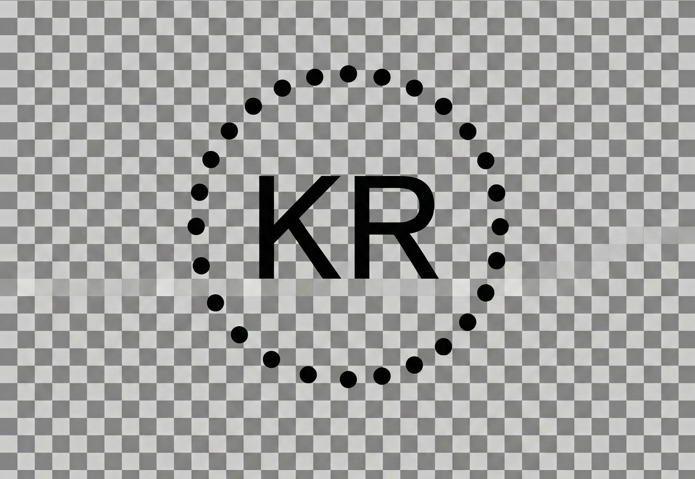

|
Askia Khryss Roxas I'm a first-year undergraduate at Mapúa studying Data Science. I'm also an advanced mathematics, physics, and research student in ThinkingBeyond Education's 12-week quantum research programme. Previously, I interned at an ed-tech startup, Eskwelabs, where I worked on automating market research workflows from ideation through deck creation. Beyond tech, I was a creative nonfiction mentee at The Adroit Journal and presented a neuroscience research in South Korea on how climate conditions affect the brain mentored by an NIH-affiliated scientist. On campus, I currently serve as the project manager for its Information System's club. In my past life, I was a charcoal artist!! (and undertook commissioned pieces) |
{kind=link}
ProjectsI'm primarily interested in community-based projects; mostly computer science, policy, and education. Here's a rundown of some of my works! |
|
Coastal Sounds: AI-Powered Traditional Music Preservation
Hack with the Beat Hackathon, Triple prize winner, 2025 Project code, Demo A web application serving rural Filipino coastal communities through music preservation and generation. Awards: 1st Place (Best Music-Themed Hack), 2nd Place (Best Machine Learning Project), 3rd Place (Best Overall Hack). |
|
|
The Impact of Temperature and Humidity on Neural Activity and Cognitive
Performance in Climate-Vulnerable APEC Populations
APEC Youth STEM Conference at Busan, Korea; Media, 2nd Place, 2025 Under publication A pilot study that measured how extreme heat and humidity impact the brain, finding that these conditions significantly decrease a person's ability to focus and solve problems. View our poster |
|

|
Flood Voice NLP Analyzer
LingHacks VI International Hackathon, 3rd Place, 2025 Project demo + code A bilingual system that uses natural language processing to analyze English and Filipino distress messages, helping emergency responders prioritize urgent needs like food and medical care during floods. |
|

|
Building an Inclusive & Ethical AI-Powered Future for Paombong’s Schools
Civics Unplugged, 1st Place, 2025 Project deck A framework that brings localized AI education to rural schools in Paombong, Bulacan, using offline tools and native languages to bridge the digital divide. |
|
|
Diagnostic Accuracy of Early Warning Signs for Severe Dengue: A Systematic
Review across Asia and South America
International Young Researchers' Conference, 2024 Project presentation A systematic review that evaluated how well early warning signs, such as abdominal pain and fluid buildup, predict severe dengue cases, helping doctors across Asia and South America identify high-risk patients sooner. |
WritingsBeyond academic rigour, I write primarily creative nonfiction through mentorships and international fellowships. |
|
The Adroit Journal's Summer Mentorship Program
I was under the creative nonfiction track, under the mentorship of Dr. Brazeal Garza 2025 Writing collection |
|
|  |
The Kenyon Review's Winter Young Writers Program
I workshopped Mundane to Marvelous, under the mentorship of Mx. Negesti Kaudo 2024 Final piece |
|
I also have a published work on one of my country's most prominent and influential newspaper the Philippine Daily Inquirer and was also the winner of the Harvard Alumni GlobalWE IYRC Essay Competition 2024! |
CertificationsAside from joining mentorship programmes, I'm aiming to independently learn from MOOCs. Here are the courses on my lineup... Finished courses link directly to my certificates; otherwise, they just link to the course itself. |
|
Website design and code credited to Jon Barron and all illustrations are from undraw.co |